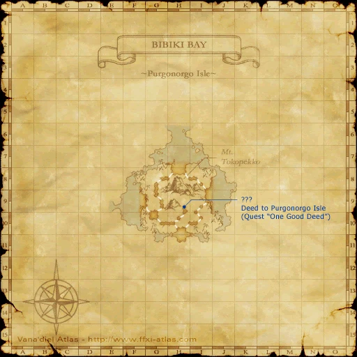

Description
Bibiki Bay - Purgonorgo Isle is an outdoor area in Kolshushu.
Map

Involved in Quests / Missions
| Quest / Mission | Type | Starter | Location |
|---|---|---|---|
| One Good Deed? | Map | Chipmy-Popmy | Port Windurst (C-8) |
| Recycling Rods | General | Keshab-Menjab | Mhaura (H-9) |
| The Search for Goldmane | General | Zoriboh | Rabao (F-6/7) |
NPCs
| Name | Location | Type |
|---|---|---|
| Noih Tahparawh | pos=H-7 | Adventurer's Assistant - Timeschedule Manaclipper |
| Toh Zonikki | pos=H-7 | Adventurer's Assistant - Clamming NPC |
| Rhalo Davigoh | pos=H-7 | NPC (Quest) |
| Pohka Chichiyowahl | pos=H-7 | Standard Merchant - fishing equipment |
| ??? Warmachine | pos=H-11 | NPC (Mission) |
Notorious Monsters
| Name | Level | Drops | Steal | Family | Spawns | Notes |
|---|---|---|---|---|---|---|
| Lancet Jagil | 42-43 | Cleanly Snapped Rod Pugil Scales Shall Shell | — |  PugilsImage source PugilsImage source | 1 | Fished up; Involved in Quest Recycling Rods; A, H |
| Serra | 44-46 | Volans Greaves Pugil Scales | — | PugilsImage source | — | A, H |
| Shen | 84-86 | Reverend Mail | — |  UragnitesImage source UragnitesImage source | — | Spawned by trading a Shrimp Lantern to the ??? at J-9.; A, H |
Regular Monsters


Event Monsters
| Name | Level | Drops | Steal | Family | Spawns | Notes |
|---|---|---|---|---|---|---|
| Peerifool | 48 | — | — |  MandragoraImage source MandragoraImage source | 6 | Spawned for Quest One Good Deed?; A, L, H |
| Rohemolipaud | 55-56 | — | — |  HumanoidsImage source HumanoidsImage source | 2 | Spawned for Quest The Search for Goldmane; A, L |
| Rohemolipaud | 55-56 | — | — | HumanoidsImage source | 1 | Spawned for Quest The Search for Goldmane |
| Invasive Mandie | ~10 | — | — | MandragoraImage source | — | Spawns during Sunbreeze Festival 2023 |
| Midgardsormr | — | — | — |  MarolithsImage source MarolithsImage source | 1 | Spawns during Sunbreeze Festival 2023; Not claimable |
References
External references describe their own server or retail rules. Documented Zenith changes take precedence.
Map credits: Map 1 — HorizonXI Wiki. Original game maps © SQUARE ENIX; redrawn maps retain the credited authorship and license.

Additional level-75 reference

This island in the middle of the Bibiki Bay is accessible only via the Manaclipper. Due to its separation from the mainland, the island has developed its own ecosystem and unique species, including the Uragnites and Clots.
This area is only accessible if the Chains of Promathia expansion is installed.
Connecting Areas
Involved in Quests/Missions
| Quest | Type | Starter | Location |
| One Good Deed? | Map | Chipmy-Popmy | Port Windurst (C-8) |
| Recycling Rods | General | Keshab-Menjab | Mhaura (H-9) |
| The Search for Goldmane | General | Zoriboh | Rabao (F-6/7) |
| Mission | Location and/or NPC | ||
|---|---|---|---|
| Promathia Mission 5-3-3: Past Sins (Louverance's Path) | H-11 ??? Warmachine | ||
| Promathia Mission 8-4 | H-11 ??? Warmachine |


Notorious Monsters Found Here
|
Name |
Level |
Drops |
Steal |
Family |
Spawns |
Notes | |||||||
|
42-43 |
Fished Up |
A, H | ||||||||||
|
48 |
6 |
A, L, H | ||||||||||
|
55-56 |
2 |
A, L | ||||||||||
|
84-86 |
|
1 |
A, L | |||||||||
| 50? |
1 |
S | |||||||||||
|
HP = Detects Low HP; M = Detects Magic; Sc = Follows by Scent; T(S) = True-sight; T(H) = True-hearing JA = Detects job abilities; WS = Detects weaponskills; Z(D) = Asleep in Daytime; Z(N) = Asleep at Nighttime | |||||||||||||
Mobs Found Here
|
Name |
Level |
Drops |
Steal |
Family |
Spawns |
Notes | |||||||
|
37-40 |
21 |
L, H | |||||||||||
|
36-39 |
21 |
L, S, Sc | |||||||||||
|
32-35 |
19 |
||||||||||||
|
30-34 |
Fished Up |
A, H | ||||||||||
|
35-39 |
Fished Up |
A, H | ||||||||||
|
30-34 |
Fished up |
A, H | ||||||||||
|
35-37 |
3 |
A, S, M | ||||||||||
|
36-38 |
12 |
H | |||||||||||
|
37-40 |
4 |
A, H | |||||||||||
|
44-46 |
Fished up |
A, H | ||||||||||
|
38-40 |
12
|
H | |||||||||||
|
38-40 |
8 |
A, H, Sc | |||||||||||
|
HP = Detects Low HP; M = Detects Magic; Sc = Follows by Scent; T(S) = True-sight; T(H) = True-hearing JA = Detects job abilities; WS = Detects weaponskills; Z(D) = Asleep in Daytime; Z(N) = Asleep at Nighttime | |||||||||||||
Adapted from Eden Wiki: Bibiki Bay - Purgonorgo Isle · Contributors and history · CC BY-SA 4.0. Revision 45817. Layout, links and optional background text adapted for Zenith.